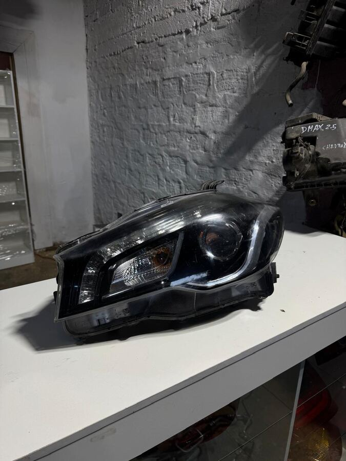

Repuestos Disponibles

Foco delantero izquierdo (LH) LED Original
$289.990
Incluye módulo electrónico. Compatible: Suzuki S-Cross (2015-2020)
Estamos publicando las piezas disponibles de Suzuki S-Cross, una por una, con foto y precio real. Si necesitas una pieza específica ahora, escríbenos por WhatsApp indicando el año y la parte que buscas — te confirmamos disponibilidad y precio al instante.
💬 Consultar por WhatsApp